I have a PhD in
Industrial and Operations Engineering from the
University of Michigan under
Yili Liu where I developed models of dual-task performance in Queueing Networks - Adaptive Control of Thought-Rational (QN-ACTR) and the effect of incentive-induced effort on
time-sharing efficiency between tasks. I studied task concurrency and the contributions of individual task execution and time sharing to performance improvements under increased effort. I developed custom
software for experimental task interface, data collection, and data analysis, and a Wii-remote cursor controller in Java using four USB-powered infrared LEDS.
I received a bachelor's degree in Computer Science from U-M in 2007 and a master's degree in Computer Science from Wayne State University in 2009. My master's thesis concerned the adaptation of Cultural Algorithms to solve multi-objective optimization
problems.
My recent hobby projects have been web apps and libraries, and most are public on my github page.
Tabasci
Tabasci is a web-baed collaborative real-time guitar tablature editor that I built in Dart with a Firebase data and hosting backend.
It is designed it with a strong late-90s ascii text aesthetic despite its modern and powerful editing features. It provides plain-text to support sharing on any tab hosting service.
Enamerator
Enamerator is a Markov chain-based name inventor trained on American name data that provides a never-ending list of randomly-generated namves.
It is parameterized to allow the user to specify a length range and prefix. The names tend to sound like names from science fiction.
You can find me on
twitter.com/sirctseb,
github.com/sirctseb, or by email
(bestchris@gmail.com).
ARL
I work at the Army Research Laboratory where I have developed APIs in C#, Java, and C++ for accessing data transmitted via RabbitMQ, each using the native event system or accepted callback paradigm of the language. The APIs encapsulate
the complexities of communicating with RabbitMQ and unmarshalling data to allow client code to subscribe to events and receive data in language-native classes.
I also wrote reference documentation and development guides for each API and produced tools to aid client application development. Wrote package to create game objects in the Unity game engine based on the data.
University of Michigan
From 2006 to 2013 I developed 3DSSPP a biomechanics analysis and job safety application for Windows. I integrated results and models from empirical biomechanics and ergonomics research into application features, rewrote the biomechanics analysis backend to improve speed, remove hard-coded legacy constants, and conform to modern code style, engaged with customers to identify bugs and desired features, trained new project members on the code base and managed development efforts.
I like puzzles, music, math, computer science, and irrigation.
I work on 3DSSPP, a job safety analysis program developed at the
Center for Ergonomics.
If you need sprinkler service, installation, or winterization in southeast Michigan, I know a great company:
Best Irrigation
I run sometimes, not very often. Recently, I've been plotting out interesting routes around campus and recording my run using iMapMyRun on the iPhone. Click on the map images to see full-size zoomable maps at mapmyrun.com.
5 May 2013. First Anniversary
Happy Cinco de Mayo! Today is my one year anniversary (with my wife). We celebrated by going to
Domino's Petting Farm, Putterz Golf & Games, and Blue Nile. The traditional gift for a first wedding anniversary
is paper and the modern gift is clocks, so I got Katharina a book where you make a clock out of paper. She made me a pillow in modeled after a ticket
from the movie theater where we went on our first date and got engaged.
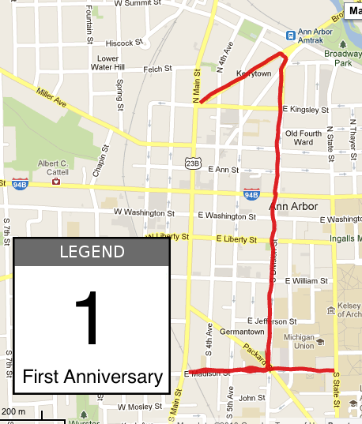
28 Jan 2011. Pre pre engaged
On Jan 28, I asked Katharina Ley if she was interested in getting married, and she indicated that she was interested in doing
that, so now we are engaged. The day before, I ran this diamond ring run (diamond not to scale). Thanks to our family and friends for celebrating with us and for all your congratulations. Most of all, I thank Pete Klassen for the Ringbearer font used in the legend. It really made the Lord of the Rings reference land.
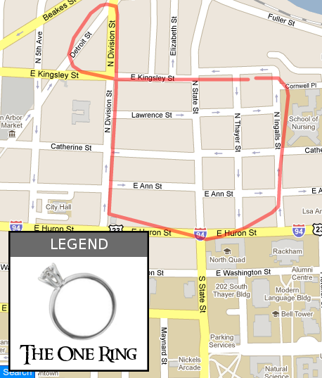
4 Sept 2010. Game Day
Mmmm, college football. My complete lack of football education allows me project a very successful season this year. See 109,900 of you at the stadium today.
Go Blue!
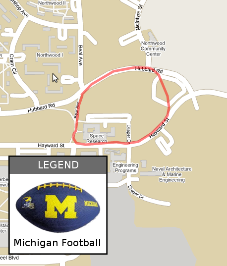
31 May 2010. Happy Memorial Day!
Today we thank the servicepeople who have put our nation's interest before their lives. The holiday began as Decoration Day in 1868. Michigan was the first state to make the
day a state holiday in 1871.
Any likeness between the top left part of the flag and the batman symbol is unintentional and should be ignored. I was trying to just make it look like one big star. Also, including the run from and to my house, this is the
farthest I've ever run at one time.
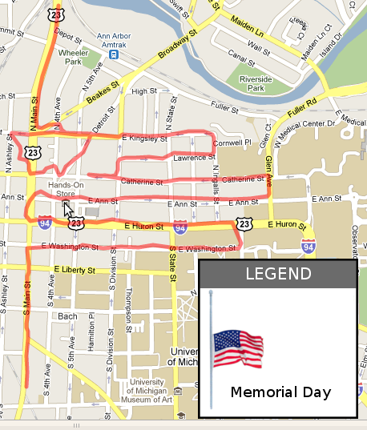
14 February 2010. Happy Valentine's Day!
Known also as St Valentine's day, or just Valentines.
Legend has it that Valentine was a Roman priest who fell in love with his jailer's daughter, to whom he sent the very first Valentine.
I don't know where the canonical heart shape came from, but wikipedia has a pretty good summary of ways to represent it, including
♥ and
(x2+y2-1)3-x2y3=0 Usually, I just use <3
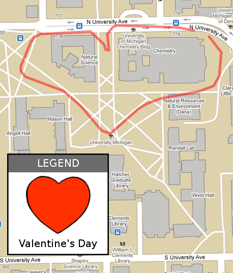
5 February 2010. My friend Chris asked me to do a peace sign because he's a pretty big hippie. He is moving to Montana and I will miss him.
Fun fact #1: The peace sign derives its shape from a combination of the semaphore signals for N and D, signifying nuclear disarmament. True story. That's why I don't feel so bad that I had to cheat
and composite two different runs to get it to come out right.
Fun fact #2: John F. Kennedy announced the Peace Corps at the Michigan Union (visible on map) on October 14, 1960.
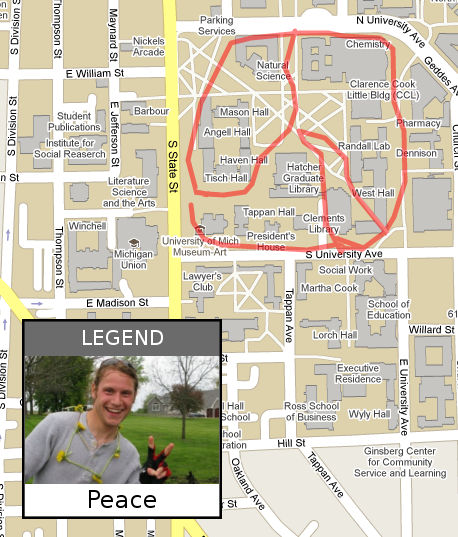
24 January 2010. Maggie asked me to make a flower so I did. The
Dahlia Pinnata
is the national flower of Mexico. I'm pretty sure I saw the same two people walking on East U, and then several separate times on the Diag. They must have been very confused.
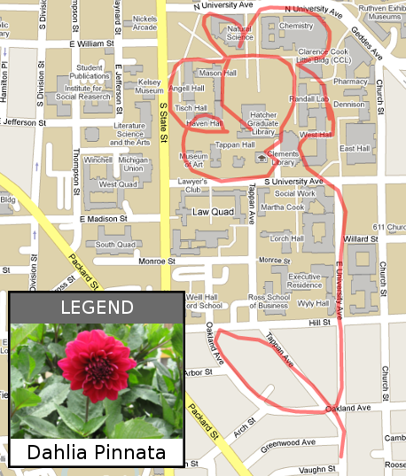
2 January 2010. I went on a cruise over vacation. I ran on the treadmill one time, and I didn't record the GPS, but if I had, it would have looked something like this. At an estimated 20 mph, the boat covered around
3 miles in the 9 minutes it took me to run a mile on the treadmill.
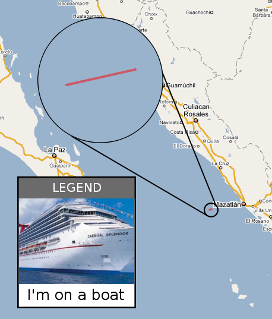
25 December 2009. Happy holidays! I'm back home in Troy and the roads here are not as convenient for making shapes. Here is my attempt at a Charlie Brown-style christmas tree.
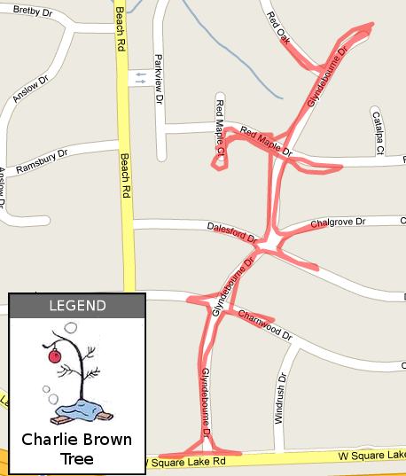
17 November 2009. Leonids. This morning I ran to the wave field to watch the Leonids meteor shower. I saw 5 meteors! It was very exciting. That's 5 more than I
saw that sad, overcast morning when I tried to watch the Orionids. I took a pentagram detour in Mitchell field and the parking lot across the street, in honor of our fallen stars.
I think this is my most successful run yet. Although I do feel like I cheated because I was running through a giant field, so I wasn't constrained to sidewalks.
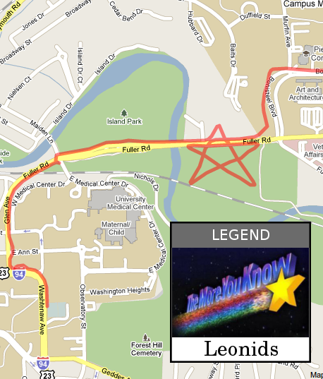
13 November 2009. A tribute to Weezer. There was some construction in the way and the GPS signal was weak, but you can still almost make out what it's supposed to look like.
I added a legend for clarity. So this goes out to my favorite band as a tribute. I also have a lightning bolt guitar strap.
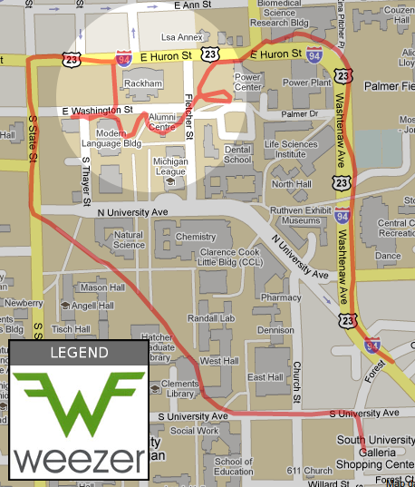
11 November 2009. An attempt at the Michigan block M. My M route is concentric with the block M on diag. GPS data isn't great on campus so the whole right side is bulbous. I had to double back in the south west
corner because I thought the sidewalk went through to the diag, but it turns out there's a fence in the way
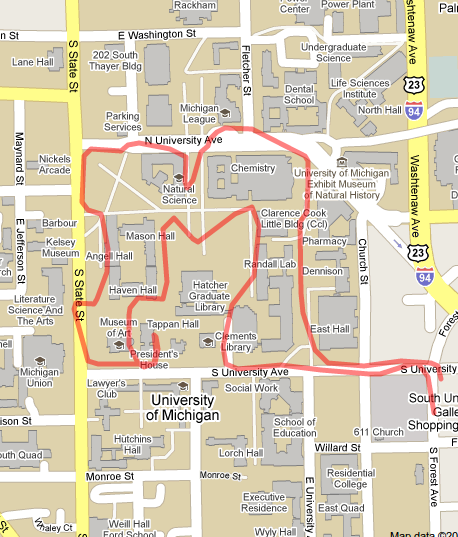
10 November 2009. I tried to run a spiral in Palmer field behind MoJo. It didn't work very well. It's hard to tell hard close to the middle you should run each loop when it's dark and you have no reference points.
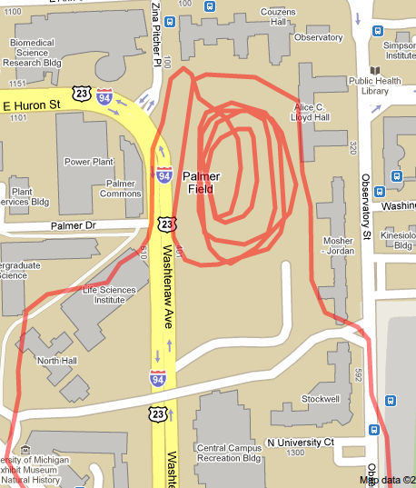